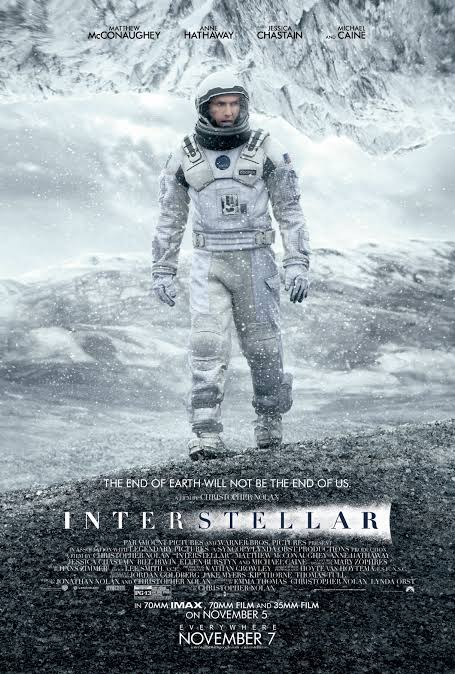

Exploración espacial

Ciencia ficción★ Selección
Interestelar
Dirección: Christopher Nolan (2014)
Una misión espacial busca un nuevo hogar para la humanidad mientras el tiempo desafía a sus protagonistas.